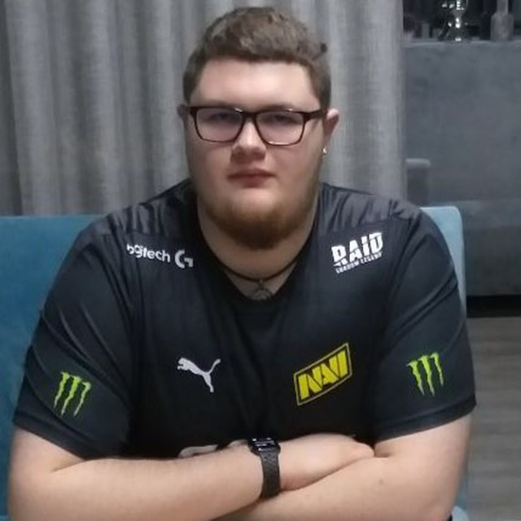

Вітаю! Тут ви можете дізнатися інформацію про автора цього блогу, чому він цим займається та як його підтримати
Про мене

Привіт! Мене звати Нікіта, і я створив цей кулінарний блог, щоб поділитися своєю пристрастю до смачної їжі та домашнього приготування.
Готування завжди було для мене більше, ніж просто повсякденне завдання – це мистецтво, де кожен інгредієнт, кожен смак і кожен аромат має свою історію.
Ідея створити цей блог виникла з бажання показати, що готувати смачно може кожен, незалежно від досвіду на кухні. Я сам багато експериментував з різними рецептами і знаю,що для багатьох людей кулінарія здається чимось складним і навіть лякаючим. Але я хочу розвіяти цей міф і довести, що процес приготування може бути легким і приємним, якщо підходити до нього з натхненням.
Мій блог – це місце, де ви знайдете прості, зрозумілі рецепти для будь-якої нагоди: від швидких сніданків до святкових вечерь.
Я ділюся тут не лише рецептами, а й порадами, які допоможуть вам вдосконалити свої кулінарні навички, навчитися поєднувати продукти та знаходити гармонію смаків. Кожен рецепт я тестую особисто, тому можу гарантувати, що результат вас порадує.
Вірю, що їжа – це не лише фізичне задоволення, а й спосіб створювати особливі моменти з рідними та друзями. За столом народжуються спогади, об'єднуються серця, і я хочу допомогти вам стати частиною цих важливих миттєвостей. Приєднуйтеся до моєї кулінарної подорожі, де кожен рецепт – це крок до того, щоб зробити життя смачнішим!